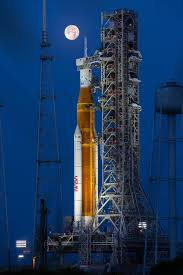
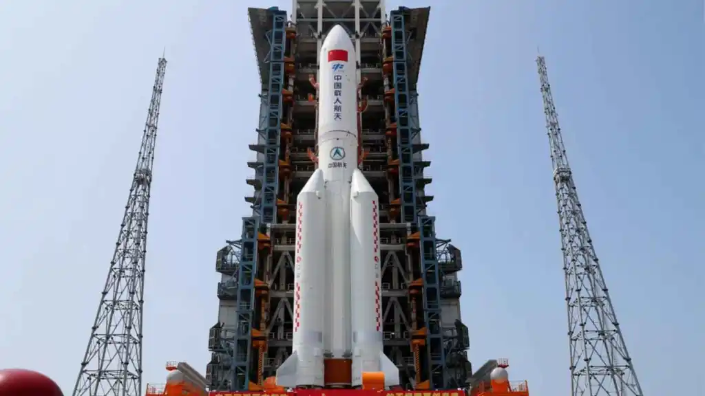
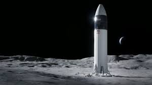
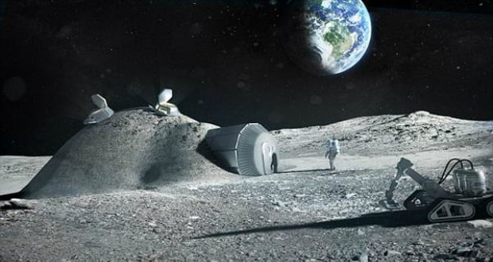
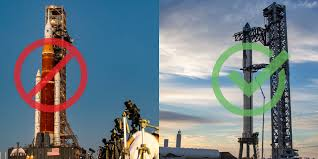

El programa Artemis és la resposta dels Estats Units al projecte xinès de crear una colònia científica permanent a la Lluna. L’objectiu de la NASA és construir una estació espacial anomenada Gateway, que orbitarà la Lluna i substituirà l'ISS, que deixarà de funcionar cap al 2030. A més, es planeja establir una colònia lunar permanent al pol sud de la Lluna.
Aquesta colònia es beneficiarà del descobriment de gel d’aigua als cràters dels pols lunars. Mitjançant tècniques avançades d'impressió 3D amb regolita lunar i estudis en agricultura hidropònica realitzats a l'ISS, es creu que una colònia autosostenible és viable.
El programa Artemis i la colònia lunar també serviran com a banc de proves per a futures colònies a Mart, permetent desenvolupar i perfeccionar tecnologies clau abans d’enviar missions tripulades al planeta vermell.
Tornem a la lluna
Explorem els plans i les ambicions per retornar a la Lluna, marcant el començament d'una nova era d'exploració espacial. En aquesta pàgina veurem què es farà diferent aquesta vegada, com tornarem a posar persones a la Lluna i els problemes i retrassos
Què farem diferent aquesta vegada?


Com tornarem a posar persones a la Lluna?
El programa Artemis consta de quatre fases principals:
- Artemis 1: Missió no tripulada ja completada. Va consistir en el llançament del coet SLS que va enviar la càpsula Orion a orbitar la Lluna i tornar a la Terra, per testejar l’hardware i el software.
- Artemis 2: Aquesta missió serà similar a Artemis 1, però amb una tripulació d’astronautes que orbitaran la Lluna i tornaran.
- Artemis 3: La primera missió tripulada a la Lluna des dels anys 70. La càpsula Orion serà llançada pel coet SLS i s’acoblarà a l’estació Gateway. Els astronautes descendiran a la Lluna amb una Starship d'SpaceX, passant 6 dies recollint mostres i realitzant experiments. Finalment, retornaran a la Gateway i després a la Terra.
- Ampliacions: Després d’Artemis 3, es preveu ampliar l’estació Gateway i establir una base lunar permanent.


Problemes i retrassos
El programa Artemis ha afrontat nombrosos problemes i retards:
- Producció i costos: El coet SLS depèn de contractes amb empreses com Boeing i Lockheed Martin, que han experimentat retards i sobrecostos. Això ha convertit el projecte en un pou de diners que el Congrés dels Estats Units no està disposat a seguir finançant.
- Alternatives més modernes: Empreses com SpaceX ofereixen solucions més barates i eficients amb coets reutilitzables com la Starship, eliminant la necessitat de construir un nou coet per cada missió.
- Canvi polític: Amb l’entrada de Trump i els canvis d’administració, el futur del SLS sembla incert. Tot i que les missions Artemis es realitzaran, hi ha plans per explorar alternatives més rendibles, com la Starship d'SpaceX o el New Glenn de Blue Origin.
